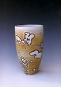

Articles Photographing Your Own Work
etting your work photographed by a professional photographer can be quite expensive, but you can achieve comparable quality with your own equipment in your own home with a bit of experimenting and some helpful hints. Many bad photographs of ceramic work are due to reasons easily rectified. However getting that really professional looking shot does take a bit of experience. Non-the-less, this article should shed some light on some basic rules of photographing your pottery, ceramic sculpture or any other artwork for that matter. Basic requirementsFirst of all you will need a good, basic SLR (Single Lens Reflex) camera with a tripod. If you are trying to take great photos of your work with a throwaway camera you probably won't get the results you were hoping for. Most camera bodies will fulfill pretty much the same function, it's the actual lens where you start getting great quality differences. So make sure you have a good, crisp, clear lens, preferably a 50mm with a macro (close-up) capability. Secondly, make sure you have the right film type. If you are photographing outdoors, a standard 100 ASA film will probably do. If you are photographing indoors or in subdued light, you should think about getting a 200 ASA or even a 400 ASA film. If you are photographing indoors with tungsten light (normal bulb light) you might consider getting a special tungsten film. However this is only good if you intend shooting the whole roll indoors. Thirdly -- and this is where most people make shortcuts -- get hold of a professional graduated photography backdrop. This is a large sheet (1m x 1.5 m or about 3 x 4.5 feet) of thick laminated paper or plastic that is black or dark blue on one end and gradually fades into white at the other. Get black fading into white -- no other colors -- they won't look good and will distract from the work. If you aren't going to be doing enough photography over the years to warrant the expense, a large plain sheet of white paper (sometimes obtainable for free at newspaper printers) or some other large sheet of artistic paper (e.g. marbled, as in the examples below) will do -- but the results won't be as good. Indoors or Outdoors?While it is possible to take good shots outdoors, many people make the mistake of photographing their work in an outdoor setting, with plants, garden furniture, footpaths, pets and the like visible in the picture -- not good! You want to keep the photo as simple as possible so nothing distracts from the work. If you want to photograph outside, let's say for lighting reasons, try and set up a backdrop in a light but shaded area. Direct sunlight will create strong shadows and undesirable highlights on shiny surfaces. Better to set up shop indoors in a very light room, with sunlight filtering into the room, but not directly onto the work you are photographing. Alternatively, you might use the sunlight, but dampen it by tacking a white sheet or paper to the window. If there is insufficient light available, you will have to resort to using artificial lighting with either the right film type or with filters. If you are thinking of using artificial light, try getting hold of two 200 watt bulbs and place these behind some large sheets of tracing paper, to soften the light and avoid strong shadows. If you are using tungsten light and normal outdoor film, you will also need a blue filter, but this is a very tricky area and too complex to cover in this article. You will just have to experiment. Never take photos with neon light, as this is extremely difficult (even for pros) to counterbalance and you will most likely get a strong green cast.
Next Page> Setting Up
|
|
| © Ceramics Today |